Como funciona o DBD?
Dead by Daylight é um jogo de horror assimétrico multiplayer desenvolvido pela Behaviour Interactive, lançado em 2016. O jogo envolve cinco jogadores: quatro sobreviventes e um assassino. Os sobreviventes trabalham juntos para consertar geradores espalhados pelo mapa, com o objetivo de abrir os portões de saída e escapar. Cada sobrevivente possui habilidades únicas chamadas "perks" que ajudam na sobrevivência, como curar mais rápido, esconder-se melhor ou sabotar os ganchos usados pelo assassino. A cooperação é essencial, pois os sobreviventes podem ajudar uns aos outros a se libertarem de armadilhas, curar ferimentos e distrair o assassino. O jogador que assume o papel do assassino deve impedir que os sobreviventes escapem, capturando-os e oferecendo-os a uma entidade maligna. Cada assassino tem habilidades especiais alinhadas com seu estilo de jogo e origem, como se mover rapidamente, colocar armadilhas ou detectar sobreviventes escondidos. A tensão do jogo é mantida pela necessidade dos sobreviventes de evitar o assassino enquanto completam seus objetivos, e pela habilidade do assassino de utilizar suas capacidades únicas para caçá-los e impedi-los de escapar. Dead by Daylight é conhecido por sua atmosfera aterrorizante e pela sensação constante de perigo. O jogo também se destaca por suas colaborações com diversas franquias de terror famosas, incluindo personagens icônicos de filmes e séries de terror, o que adiciona ainda mais variedade e apelo ao jogo. A combinação de habilidades específicas dos personagens, a necessidade de cooperação entre os sobreviventes e a ameaça constante do assassino tornam Dead by Daylight uma experiência de jogo única e emocionante.